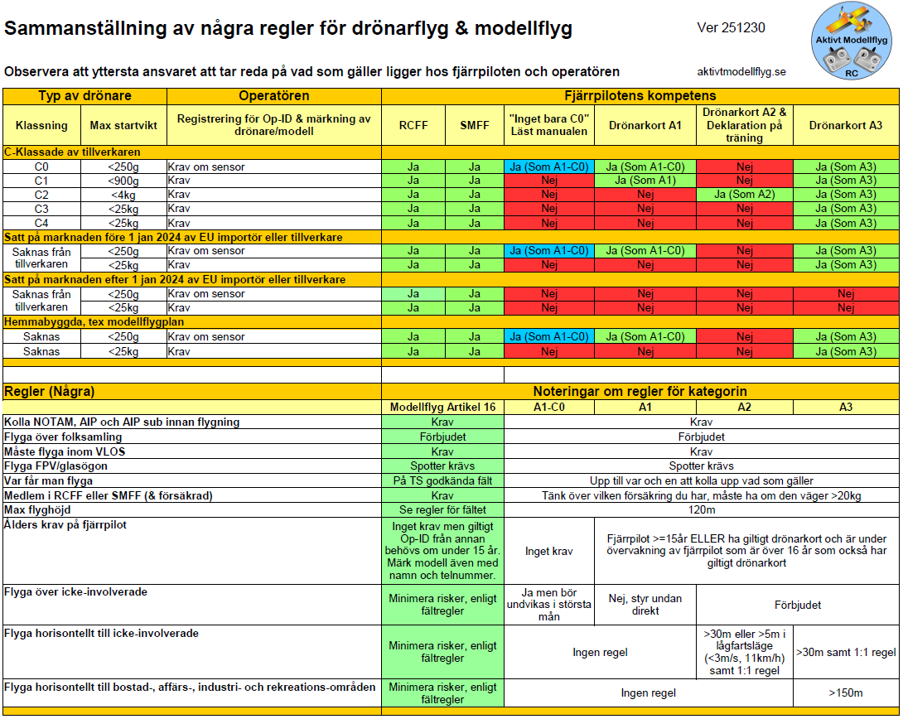

Regler
Man kan flyga under två olika regelsystem, Organiserat modellflyg och med drönarkort.
Oavsett vad som står här är man skyldig att kontrollera vad som gäller dig, regler (kan) ändras med tiden.
1 - Organiserat modellflyg
Enklaste sättet att börja.
Fördelar
- Medlemskap, du kan få hjälp av klubbmedlemmar.
- Ingen undre åldersgräns.
- Försäkring ingår, via förbunden SMFF eller RCFF. Försäkring är obligatorisk.
Nackdelar
- Får bara flyga på godkända modellflygfält.
Modellen måste vara märkt med Operatörs-ID. Detta registrerar man på Transportstyrelsen hemsida. Länk till Registrera Operatörs-ID (Öppnas i ett nytt fönster)
Värt att notera.
Vissa godkända fält är godkända för högre flyghöjd än 120m, men det innebär inte att luften är fri.
1) I "vfr-handbok" från Transportstyrelsen hittar man följande för piloter.
"Utanför tätbebyggt område gäller 500 ft över marken eller vattnet samt 500 ft över hinder inom 150 m från flygplanet. Detta framgår av SERA.5005."
Länk till TS sidan där man kan ladda ned handboken. (Öppnas i ett nytt fönster)
2) I "SWEDEN Aeronautical Information Publication" under (AIP ENR 5.5) kapitel "Modellflyg över 120 m AGL i okontrollerad luft" kan man läsa
"Modellflygfält finns på många platser i hela Sverige. Vid flertalet av dessa fält förekommer modellflygning upp till 300-600 meters höjd över marken. Även om modellflyget har väjningsplikt för övrigt flyg, kan de utgöra en potentiell riskfaktor för övrig flygtrafik på dessa höjder. Modellflygfält som är godkända av Transportstyrelsen för flygning över 120 m AGL i okontrollerad luft framgår av följande tabell."
Länk till AIP (Öppnas i ett nytt fönster)
En tolkning blir då att man inte kan förvänta sig civilt flyg under 150m. Men över 120/150m måste man vara mycket mer observant.
2 - På egen hand med drönarkort (öppna kategorin)
Högre krav och mer ansvar, inte lika enkelt att förstå regelverket.
Fördelar
- Får flyga på flera ställen, men inte överallt.
Nackdelar
- All modeller får inte flygas. Det är en mix av C-klassning från fabrik, när det sats på marknaden eller om den är hemmabyggd osv som avgör.
- För vissa modeller krävs försäkring, men rekommenderas för alla modeller.
- Måste ha giltigt drönarkort (skriva teori prov och eventuell praktisk uppflygning vid drönarskola).
Länk till Transportstyrelsens sida för drönare och drönarkort (Öppnas i ett nytt fönster) - Piloten (heter fjärrpiloten i regelverket) måste vara minst 15 år i Sverige (16 år i EU).
Är man yngre måste man ha en fjärrpilot med giltigt drönarkort (över 16år) som övervakar. - Inte så tydligt om du får flyga i vissa områden.
Modellen måste vara märkt med Operatörs-ID. Detta registrerar man på Transportstyrelsen hemsida. Länk till Registrera Operatörs-ID (Öppnas i ett nytt fönster)
2.1 - 249 gram och lättare (C0-klassad)
Det finns drönare som är certifierade av tillverkaren och märkta med C0 märkning. En del butiker säger att det då bara är att köpa och flyga utan drönarkort. Detta stämmer, men är dock inte hela bilden !
Om drönaren har en kamera (eller annan sensor som kan samla in personuppgifter) måste man registrera sig som operatör och märka drönaren med ett Operatörs-ID.
Något drönarkort krävs alltså inte, men man måste ändå följa de regler som gäller för drönarflygning.
Tänk också igenom vilka försäkringar du har och om de verkligen täcker drönarflygning. Det är inte ovanligt att försäkringsbolag uttryckligen undantar detta.
C0-klassning innebär enbart lättnader i flygreglerna t.ex åldersgränsen. Övrig lagstiftning, såsom avbildningsförbud (t.ex. fotoförbud), spridningstillstånd och andra restriktioner, påverkas inte av C-klassning.
2.2 - Varför du inte får flyga i vissa områden trots drönarkort. (Några exempel)
Natura 2000-områden. Dessa områden är skyddade för att bevara känsliga djur och natur.
Drönare kan störa häckande fåglar, djurliv och lugna miljöer. Därför krävs tillstånd från länsstyrelsen innan du flyger.
Drönarkortet är alltså helt oberoende av denna lagstiftning.
Naturreservat och nationalparker. Här gäller lokala föreskrifter som kan förbjuda start/landning eller all flygning.
90% av alla naturreservat i Sverige har flygförbud för drönare. Ofta behövs ett särskilt tillstånd.
Vattenskyddsområden. Inte alltid förbjudet att flyga, men i många fall råder: förbud mot motorfordon i luften nära vattenverk,
restriktioner för att undvika spridning av material/kemikalier vid krasch. Detta styrs av miljöbalken, inte av drönarreglerna.
Flygplatser och kontrollzoner (CTR). Drönarkort hjälper inte här heller. Man behöver tillstånd via LFVs app/portal eller flygplatsens godkännande.
Utan det är flygning förbjuden.
Förbjudna områden från Försvarsmakten. T.ex. militära skyddsområden, skjutfält, hamnar, känsliga anläggningar.
Dessa har ingenting med drönarkortet att göra – det är separata säkerhetslagar.
Naturvårdsverkets karta över skyddad natur (Öppnas i ett nytt fönster)
På Länsstyrelsen kan vad som gäller (Öppnas i ett nytt fönster) Välj län - sök på drönare
Luften delas av många
Glöm aldrig att kontrollera eventuella NOTAM inför varje flygning, det gäller båda regelverken ovan (1 och 2).
Det kan finnas tillfälliga förbud och varningar på platser det annars är ok att flyga på.
LFV "Drönarkartan" (Öppnas i ett nytt fönster)
NOTAM info (Öppnas i ett nytt fönster)

Se de stora skillnaderna mellan organiserat modellflyg (RCFF & SMFF) och Drönarkort (A1/A3,A2).
Kommersiellt och företag
Reglerna runt detta är omfattande och sammanställs inte på Aktivt Modellflyg som bara avser hobby.